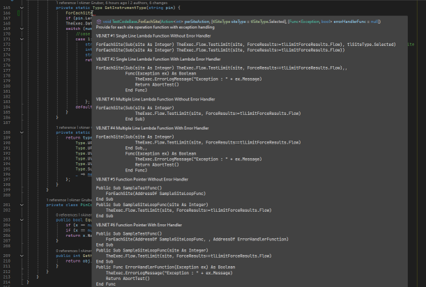

Documentation
Good intentions for great documentation exist in every project, but often enough this task falls off the table. "Functionality first and then documentation" is a flawed process, and we want to do better here.
In fact, this team is starting off with documentation, by creating design docs like this before implementing. Maybe - along with a focus on unit testing - we're just inventing a new trend Test and Documentation Driven Development (TDDD) here!
Documentation = Source Code + ???
To avoid mismatches and outdated information, documentation must live very close to the source code and take context information into account. Where things change, documentation update requirements need to be obvious, easy to implement and ideally well supported with tools.
The same processes to collaborate, review and track issues is used as for the product code itself. The documentation generation process is fully autonomous, running as part of the product build & test pipeline. Checks automatically flag violations or discrepancies, guaranteeing complete, consistent and correct documentation for the user.
XML Comments
The XML Documentation feature is used for any publicly accessible interface:
- automatically enables IntelliSense features when using them
- checked for consistency (exists? required fields filled? arguments specified correctly? return type described?) at the build process
- single source of truth API documentation
- travels with the code, is always in sync
- written and maintained by the code author
Tags to Use
In C#RA, only those tags are used which source information into the IntelliSense service. That is a small subset of the ones existing. On the top level, these are:
<summary>- one or two brief sentence to describe the function<param>- for every parameter: describe the parameter, include critical aspects ("zero based index", "non-empty string", ...)<returns>- for non-voidmethods: describe the return value<typeparam>- for generic methods: describe the meaning / functionality of the type
Important
C#RA does not use the other tags supported for XML API documentation, like <remarks>, <exception>, <example>. Such further-going information is provided via API doc extensions. The XML features to structure such rich documentation are limited, and would significantly inflate the source code.
Use the following guidelines to create consistent and efficient XML documentation:
- ✔️ Do use grammatically correct sentences in English language and end them with period (
.). Parameter and return value descriptions may omit the verb if the use is obvious (/// <param name="name">The pin name.</param>). - ✔️ Do use the
<cref>tag when referring other types - doing this will provide context aware rename support (Ctrl-R-R) and issue a compiler warning on mismatch. - ✔️ Do use normal, English capitalization.
- ✔️ Do use indicative instead of imperative mood in summary and other places (
/// Creates a new object.instead of/// Create a new object.) - ✔️ Do add brief inline comments right at code features that might be unexpected to clarify it was a deliberate choice. Otherwise, code should strive for being self-explaining.
- ❌ Don't use formatting or line breaks - they will be filtered out in Intellisense and make the text unreadable.
- ❌ Don't use abbreviations or acronyms without need.
- ❌ Don't repeat information about types or optional defaults. This information is automatically extracted from code and may get outdated if that changes.
- ❌ Don't provide excessive information here, that should rather go into the prose documentation (Overwrite) pages.
- ❌ Don't make excessive use of inline comments explaining the functionality. This information should go into the XML or override API comment section, so that it can be consumed for IntelliSense and the published documentation.
Here is a good example of how to not do it:

DocFX
DocFX is used to publish to GitHub Pages. It's the state-of-the-art solution for .NET projects, created by Microsoft for their Microsoft Learn library. It's open-source and easily deployable through GitHub Actions.
Feature Pages and More (Markdown)
Pages like this one is directly shown as a GitHub Page.
For a consistent style follow these guidelines:
- ✔️ Do target the "interested novice" for the right tradeoff between assuming too much prior knowledge and excessive explanations. Assume the reader has experience in the domain, but hasn't yet mastered the topic you're describing (why would they read that otherwise?).
- ✔️ Do create a page outline before you fill in details. Use (hierarchical) headlines to structure your content.
- ✔️ Do make use of pictures, animations, tables & mermaid diagrams. Shoot for the most compact way to convey your content ("one picture says more than 1000 words").
- ✔️ Do consider all user types in the target audience, which includes humans and LLMs. While LLMs can understand markdown structured content like tables or mermaid diagrams well, comprehension of bitmap images is much less reliable, and should not be the only place critical information is conveyed. Describe such content in the
Alt-Textfield of image links, and aim for a crisp 1-3 sentence summary. - ✔️ Do set a high standard for documentation. It is essential for users to successfully utilize the product.
- ✔️ Do compare how other, similar nodes are documented and follow their style.
- ✔️ Do use double-
**(=bold) highlighting sparingly, avoid italics (*/_) and bold+italics (***/___) for legibility and a consistent look and feel. - ✔️ Do insert empty lines between different content types (headlines, flow text, bullet item groups, tables, ...) or paragraphs. The HTML renderer may not reliably work otherwise.
- ❌ Don't use more than one first level
# Top Headlinein your document. It should be the first line on your page and correlate with the file name - ❌ Don't try to format markdown documents by using HTML tags or other means. The idea of markdown is to contain content only marked up with the content type (normal paragraph, headline, code, bullet list, highlighted text, ... ) and let the renderer do the formatting for a consistent output.
- ❌ Don't casually introduce a new style / language because you have a better idea. If you must, update similar nodes to follow the same style, or reach out to the owners of that code. But look for team agreement first.
API Documentation
DocFX can understand the source code structure and extract API documentation pages per member or type, enriched with information contained in the XML comments. That way code & API documentation is always in sync.
API Doc Extension (Overwrites)
Overwrites complement this with extended user documentation, directly written in prose Markdown. They contain further details, rich media and code examples via snippet references, which are automatically extracted from actual source code files being tested in the pipeline.
Note
UIDs create the link between an overwrite markdown file and the API node to merge the content in. Figuring out these UIDs is not trivial via the DocFX built-in features, but we're considering alternative tools to help here. Validating the correct use of UIDs and flag broken links - like in the case of API node renames - are also areas for custom tools to provide added value.
The following structure is followed for overwrites, which is blended into Details section of the API doc. All sections use level-5 (#####) headlines for consistency with the rest of the generated doc:
| Paragraph | Content | Test Method |
Test Block |
Service | Type |
|---|---|---|---|---|---|
Test Technique |
An introductory paragraph describing a typical use case this is intended for: - what are we testing on the device (background)? - what is a typical HW connection block diagram for testing using this test method (picture)? - what are typical value ranges and modes that are being programmed and what are the typical measured values expected for that typical block diagram? - what are things that can go wrong and cause unexpected values? |
✔️ | ❓ | ❌ | ❌ |
Implementation |
Summarize the implemented logic and sequence. Mention hierarchies if applicable. | ✔️ | ✔️ | ❓ | ❓ |
Platform Specifics |
Describe relevant information that is specific to some platforms only. | ✔️ | ✔️ | ❓ | ❓ |
Pre Conditions |
List any (unexpected) conditions that need to exist for successful operation. | ✔️ | ✔️ | ❓ | ❓ |
Post Conditions |
List any (unexpected) left-overs that are worth noting. | ✔️ | ✔️ | ❓ | ❓ |
Limitations |
List if and where the feature is deviating from the overall expectable use model. | ✔️ | ✔️ | ❓ | ❓ |
Examples |
Show typical use cases, add some meaningful context code applicable (not only a single line). | ❌ | ✔️ | ❌ | ❌ |
Code Reference |
Reference the actual source code. | ✔️ | ❓ | ❌ | ❌ |
Output Publishing
The output is published to a dynamic web page, nicely formatted and with cross-reference links automatically applied. Rich Search is available. All pages support direct editing, by clicking on the pen symbol 🖉 users can apply changes right on the web page and submit a pull request with the chances to the repo maintainers.
Additionally, static HTML is produced to be included in the release package shipped to users.
Inline Commenting Guidelines
Because this library is shipped as source code to aid hardware debugging and serve as a reference implementation, inline comments can play a specific, valuable role in those use cases. To avoid conflicts with the primary documentation strategies (API reference & user manual), they need to be used strategically.
It is important to remember that inline comments are not extracted into the compiled documentation package, nor are they visible to users via IntelliSense at design time. They are not available to readers unless they navigate to the implementation and inspect the source code.
Important
The Golden Rule: Prioritize writing self-explanatory code. Do not add inline comments describing what the code is doing. Comment only when logic is unexpected to explain why a specific design choice was made.
- ✔️ Do add inline comments specifically for the debug & code customization use cases. Focus and limit the information to what is important in these scenarios. Information that has a broader relevance, like for plain users, needs to go on the API / user doc level.
- ✔️ Do maintain conciseness: Treat inline comments as a "last resort." Use them only if the information cannot be conveyed through clean code structure or if it does not belong in the public API/User documentation.
- ✔️ Do explain hardware or system constraints: Use explicit comments to highlight counter-intuitive logic dictated by the hardware (e.g.,
for (int i = 1; i <= hdwObjects.Count; i++) // hardware index is 1-based; 0 is reserved). - ✔️ Do highlight side effects: Warn future developers if a seemingly harmless action triggers a hardware consequence (e.g., stalling the pipeline, auto-clearing a buffer on read, etc.).
- ✔️ Do reference external documentation: If complex details are already documented, link to the relevant section of the API or User Guide rather than re-explaining it in the source code.
- ✔️ Do mark critical sections: Clearly label code that handles safety interlocks or prevents physical hardware damage.
- ❌ Don't clutter: The source code should remain scanneable. Maintain a high ratio of functional code to comments.
- ❌ Don't state the obvious: Do not translate code syntax into English (e.g., avoid
// Increment counteror// Check if valid). - ❌ Don't duplicate: Do not copy-paste details from the XML API reference or User Manual and also avoid redundancies in content. This creates a "double maintenance" burden and inevitably leads to conflicting information.
- ❌ Don't excuse poor structure: Do not use comments to explain "clever" or messy code. If the logic requires a paragraph of text to be understood, refactor the code (e.g., by renaming variables or extracting methods) instead of commenting it.
Alternatives Considered
MyInfo
It is not currently planned to directly incorporate the C#RA documentation into MyInfo. A process to support automatic API documentation from XML comments is planned, but not yet available. Manually generating the documentation and keep it in sync with the code would result in significant overhead, and the authoring tools are not broadly accessible to application engineers.
However, since the focus lies on the content and that's where the vast majority of the effort is spent, it is expected that this can be easily transferred to MyInfo if and when that is needed.
Additional XML Tags
The use of <exception> tag was considered as it would be suported by VisualStudio IntelliSense. Since the AlertService centralizes the exception handling, no exceptions are raised from the code directly. That'll get in the way of the triple-slash /// comment wizard automatically listing any exception in the method. Without that and no compiler warning either, it would be unlikely for the code base to end up with a consistent and complete way to list exceptions. Instead, exceptional cases would be listed in extended documentation along with other limitations or constraints.
The use of advanced XML tags right in the source code was considered as alternative to prose Markdown documentation being merged via overwrites. XML doc supports a wide range of additional tags like <remarks>, <example>, <see>, <seealso>, <code>, ... which however significantly bloat the source code itself. Because the product is being shipped as source code, and is intended for users to be accessibly and intuitive, it was decided to limit XML tag use only to those that are directly reflected in IntelliSense.
Limited formatting options and access to media like images and animations and the lack of a snippet reference mechanism from verified code were additional counter-arguments.